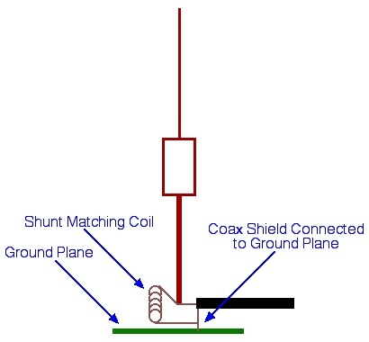
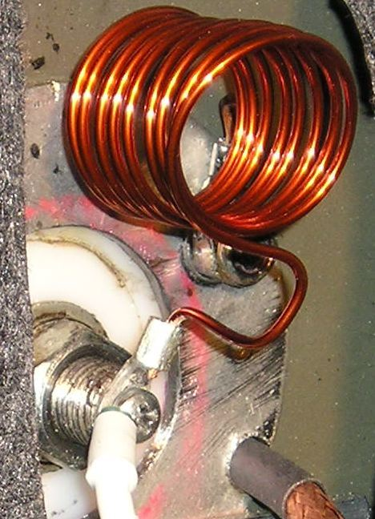
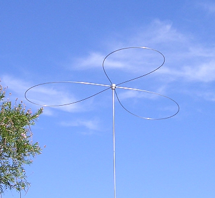
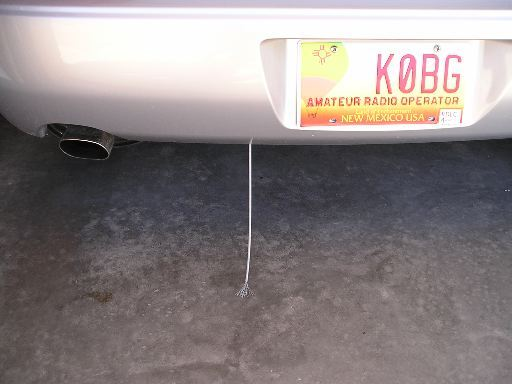

<img> as data-original-src.
Contents: Basics; Other Static Problems; Corona Loss; Static Drains; Odds & Ends;
Every single mobile operator is plagued with static. There are several kinds of static, some of which we can control, and some we can't. Knowing the difference is 90% of the cure.
Atmospheric static is the background noise we hear when we're listening to a clear frequency. It is caused by all manner of natural and man-made electrical discharges. Even the stream of electrons from the sun, and solar system add their toll. It can be soft, or so loud as to block all but the strongest signals. Although the strength (loudness) varies over a wide range, short-term changes aren't evident. In fact, you can use band noise as a signal source for comparing antennas, but you obviously need a QRM free band!
We hear static because electrical discharges by their nature have very fast rise times. In basic terms, it is nature's version of high frequency interference. Further, their frequency bandwidth can extend well into the UHF region. Noise blankers are nearly worthless in curbing atmospheric static. DSP (Digital Signal Processing) and audio filters can help reduce the perceived level, but little else can be done.

Some people believe it is caused by moisture molecules physically hitting antenna elements. This is a false assumption. It is, however, more prevalent when the humidity is high and/or when there is a near by rain or snow storm. It is especially bothersome if there is virga present (falling moisture that evaporates before hitting the ground). There isn't much one can do to control rain static, although DC grounding the antenna element does help some. Since it is a precursor to rain and possibly lightening, it is time to QRT and pay attention to your driving.
It should be mentioned that dust (and some airborne pollutants) can cause static electricity to build up on the surface of the vehicle and/or antenna.

And too, every little bit of static prevention you employ, no matter how it is done, improves the SNR. As pointed out in the highlighted article, detection of the incoming signals follow a square law function. In other words, the strength of the detected RF changes by twice the number of dB, that the signal changes. Or put another way, a little bit of static reduction, makes a big difference in the receivability.
Some forms of RFI sound a whole lot like background static, and determining if it is or isn't, can be difficult. The best line of defense, is to do the nominal noise abatement routines, especially bonding of the hood and exhaust system.
Any decent mobile antenna will require some form of impedance matching. The best way to accomplish the task is with a shunt coil as shown at right. The coil, along with a little capacitance borrowed from the antenna (tuned slightly above operating frequency), form a highpass LC network. This not only transforms the low input impedance (≈25 ohms) to that of the feed line (50 ohms), it provides a DC path to ground.
There are other static problems plaguing mobile operators. As hinted to above, dust and other atmospheric pollutants can become charged when they rub against one another. They collect on the surface of our vehicle, and our antennas. Driving along dusty roads can cause dust static, especially when the humidity is low. Dust static is just a steady buzz that never goes away until you stop wherein there is usually a pop, and the static stops. Once you're underway again, it starts back up. The perceived loudness usually increases with speed.
When vehicle AM radios first came into vogue, manufacturers were hard pressed to solve the problem. As a solution, they installed special springs inside the front axle grease cups to electrically connect the axles, and the brake drums and tire rims. They also placed graphite inside the tires. The thought was to shunt the static to ground through the various pieces mentioned. It worked, to a point. Nowadays, tires contain conductive rubber compounds and coatings, and metallic disc brakes provide a better solution. Nonetheless, you can still suffer the malady.
There is one form of apparent static which needs to be mentioned. Improperly choked motor leads, or the absents of a proper common mode coax choke, allow these cables to act as part of the antenna. Since the motor leads and coax cable are routed inside the vehicle, whatever digital signal is generated by the electronics within the vehicle, is thus heard. Some of the sensors attached to these various digital devices (particularly ABS speedometer sensors) are speed reliant, and are often indistinguishable from the stacotic rhythm of rolling static and ignition RFI. Thus controlling static, apparent or otherwise, is not a single band aid cure!
It is interesting to note, that most newer vehicles are being factory-equipped with ceramic brake pads in lieu of metallic ones. They last a lot longer, provide better stopping power especially when hot and/or wet, and do not contain any asbestos (a good thing). However, ceramic pads also have metallic particles embedded into them to aid in reducing static build up. As brake pads wear (metallic or ceramic), minute amounts of metal are scrubbed off both the pads, and the disks (drums) in the process. These particles are part of the brown-cloud smog all too many cities have to deal with. Since they are metallic, they cling to antenna mag mounts like glue. It is the oxidation of these trapped particles which cause mooning (scratch swirls) in the painted surface under mag mounts.
Corona loss during transmission can be quite spectacular as Ron's, NI7J, night time photo depicts (400 watts on 160 meters). It does effect our ability to receive as well, if we haven't taken precaution to prevent it. One way to do this is with a corona ball.
Corona balls are the little round things on the tips of most mobile antennas. The problem is, most commercial corona balls (typically 1/2 inch in diameter) are too small to be effective, especially if you run high power. What's more, they often have sharp points like protruding set screws which negate their purpose in the first place. They're easy to make. Naugatuck Manufacturing sells 1 inch aluminum balls predrilled and tapped for a 10x32 set screw. You only need to drill a hole for the hole for the whip about 15° from the predrilled hole. It should be noted that a 1 inch aluminum ball is a good compromise between weight and size, but only if you use a standard (or shortened) 102 inch whip. Whips like those supplied with some commercial VHF antennas are not strong enough to properly support a one inch ball.

Corona loss during receive is a bit of a misnomer. What is really going on, is static electricity is building up on the antenna and the vehicle it is attached to, and then arcing into the atmosphere from the very tip of the antenna. Without a corona ball or proper cap hat, what you hear is a series of snaps and pops, indistinguishable from other types static discharge.

The point is to have the drain the last thing in the slip stream. By necessity, the ends of the wires must be sharp which aides the flow of electrons to be dissipated into the slip stream. It works just like static drains found on every airplane flying. The result is a series of pops and snaps that are easily handled a noise blanker, rather than a steady roar that blocks out all signals.
Controlling static isn't a one-trick-solves-all scenario. Just like bonding to control RFI, it takes time and effort to cover all of the bases. This is one area of mobile operation where a short-stop doesn't catch the ball!
{kind=link}
{kind=link}
{kind=link}
{kind=link}
{kind=link}